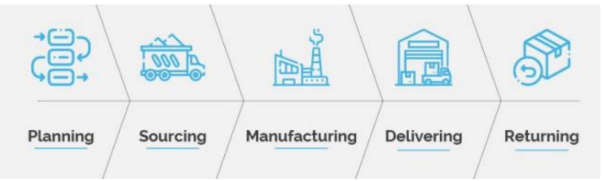

I sistemi legacy sono software di vecchia concezione e generazione, spesso difficili da modificare e aggiornare. La loro presenza può avere un impatto negativo sulla competitività aziendale, a causa della scarsa integrazione con le nuove tecnologie e della difficoltà di manutenzione, dovuta alla mancanza di documentazione.
Inoltre, i sistemi legacy mostrano una forte dipendenza tra:
I sistemi gestionali moderni sono progettati per essere personalizzabili in base alle attività aziendali, offrendo maggiore flessibilità rispetto ai sistemi legacy. Tuttavia, presentano ancora limiti strutturali (es. compatibilità solo con Windows).
Gli ERP sono sistemi informativi integrati che gestiscono tutte le informazioni aziendali e i processi di business attraverso un database comune. Ogni area funzionale dell’azienda è collegata tramite moduli specifici, garantendo coerenza e integrità dei dati.
Ogni modulo è responsabile di una funzione aziendale:
| Contabilità | Gestione degli eventi economici. |
| Controllo di gestione | Monitoraggio degli obiettivi aziendali. |
| Gestione del personale | Organizzazione risorse umane. |
| Acquisti | Gestione fornitori e spese correlate. |
| Magazzino | Controllo merci in entrata e uscita. |
| Produzione | Coordinamento attività produttive. |
| Vendite | Gestione ciclo di vendita. |
| Distribuzione | Controllo delle attività logistiche. |
Il SCM coordina le attività di acquisto, produzione e logistica. I sistemi informativi permettono di:
Inoltre, il SCM consente la pianificazione della produzione secondo la domanda, la gestione delle modifiche sui prodotti e la condivisione di dati con partner e fornitori.
Il CRM è un sistema per gestire le relazioni con i clienti, fidelizzarli e soddisfare le loro esigenze attraverso la raccolta e l’analisi dei dati.
Il CRM prevede l'uso di tecniche di segmentazione e profilazione per classificare i clienti in base a comportamenti e bisogni, così da ottimizzare le iniziative commerciali.
| Collaborativo | Operativo | Analitico |
|---|---|---|
| Gestisce i canali di comunicazione con il cliente: email, chat, sito web, call center. | Supporta attività di marketing, vendite e assistenza clienti (front office e back office). | Analizza le informazioni raccolte da tutte le aree aziendali per supportare il management. |